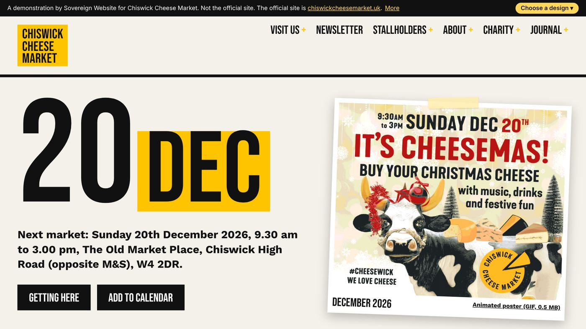
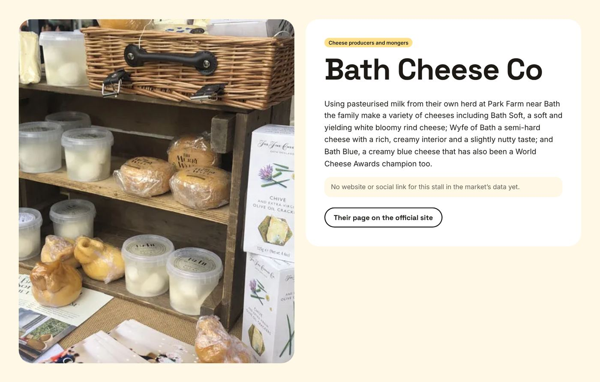

Your market's own words and pictures, drawn six new ways. Your WordPress stays exactly as it is.
A demonstration by Sovereign Website. Not the official site, which is chiswickcheesemarket.uk.

1
In short
A new front end on the content you already have
We read your public WordPress content. No login, no changes: read only.
We drew it six ways, from a close copy of today's site to new ideas.
It is a demonstration, made to start a conversation. Nothing has been launched in your name.
We would like one answer from you: which design, or which parts, feel most like the market?
2
What we read
Everything comes from your own site
18pages
103journal posts
40stallholders
394images
19monthly posters
Read on 20 November 2026 through the public feed your WordPress already publishes (its REST API), gently and read only. Your pictures are not copied: every design loads them from chiswickcheesemarket.uk.
A close copy of today's site, built from its own data. A visitor first: finds how to get there.
5
2
The Market Paper
The news, as a broadsheet dated by the next market. A visitor first: reads the lead story.
6
3
The Poster Wall
The next market as an event, on your own posters. A visitor first: adds the date to their calendar.
7
4
The Cave
A tasting menu of makers, one course per kind of stall. A visitor first: opens a maker.
8
5
The makers
The stallholders first. A visitor first: finds a stall, by name or by kind.
9
6
The data
The open data behind every design. A visitor first: asks the data a question.
10
What we noticed in your data
Your stallholders have no link to their own sites

Each stallholder has a description and a photograph, but the data has no link to their own website, no stall position, and no record of which markets they come to. A few extra fields in WordPress, filled in once per stall, would let any design send visitors straight to the makers.
15 of 110 links in the site's own pages and posts no longer work (checked 20 November 2026). The list is on the demonstration's Admin page.
11
Keeping in step with WordPress
You keep editing in WordPress, as now
We recommend the nightly read: it keeps working if WordPress is slow or down, and any change can be seen and undone. A change in WordPress shows the next morning, or straight away at the press of a button.
12
Being set up now
Ask for a change from the page itself
1
Your QR code
Drop or paste it into the site's Messages pane, once.
2
Write the change
On any page. Paste a screenshot if it helps.
3
The site changes it
Checked and published, or sent to the owner first.
4
The answer waits
In the same pane, when you come back.
Messages are encrypted on your device. Only people given a QR code can ask, and only for changes to how the site looks and reads.
13
Safe by design
Nothing taken, nothing tracked
No cookies, no tracking, no server: the site is plain files.
Nothing was changed in your WordPress.
Every page says it is not the official site, and is kept out of search engines.
Every change is signed by whoever made it and checked before it is published: links, accessibility, no secrets in any file.
For the curious: the written rules are at /policy/ on the demonstration.
14
For our conversation
Which design, or which parts, feel most like the market?
An answer like "3, with the makers from 5" is perfect. Also: anything we got wrong, or would rather not show? Would you like your own QR code? What it would cost, and who keeps it up to date: to talk about.
Choose a design on any page; it keeps your place. A demonstration by Sovereign Website for Chiswick Cheese Market. Not the official site. All words and pictures belong to Chiswick Cheese Market.
 6 The data
6 The data